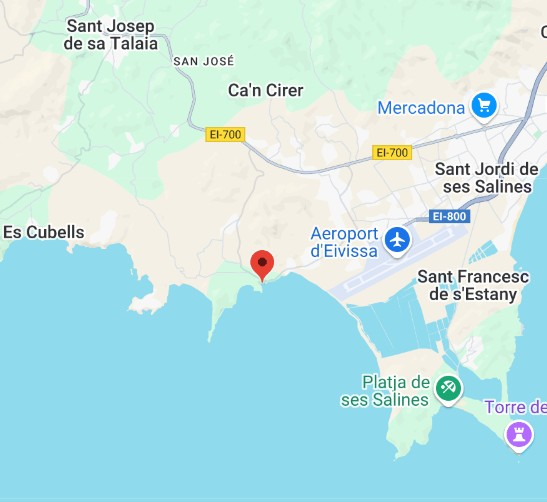

Descripció
Poblat fenici fundat al segle VII a.C., considerat un dels primers assentaments permanents a Eivissa.
Ubicació
El jaciment fenici de sa Caleta es troba en una petita península entre la platja des Codolar i es Jondal, és a dir, en la costa sud de l'illa.

Imatges